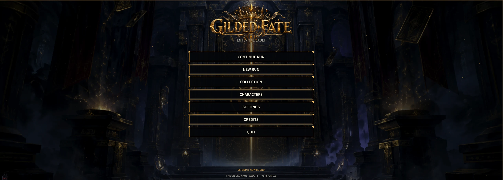
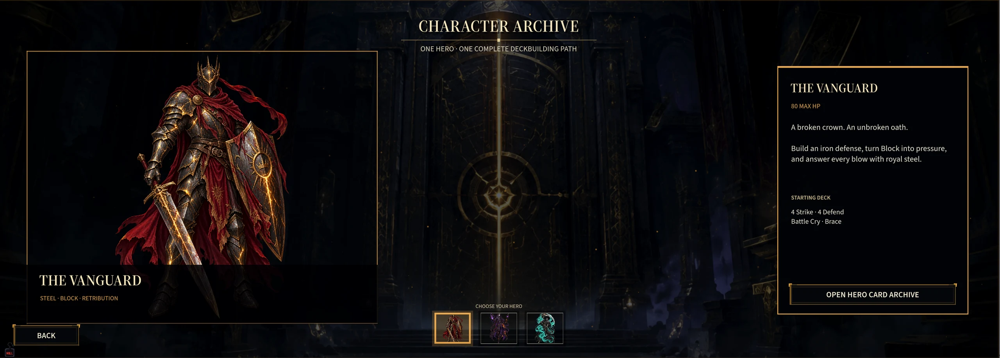
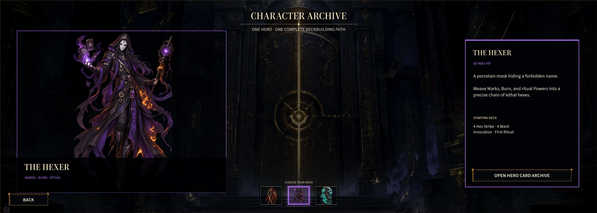
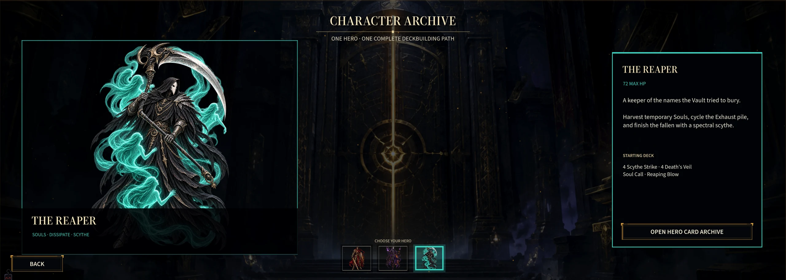
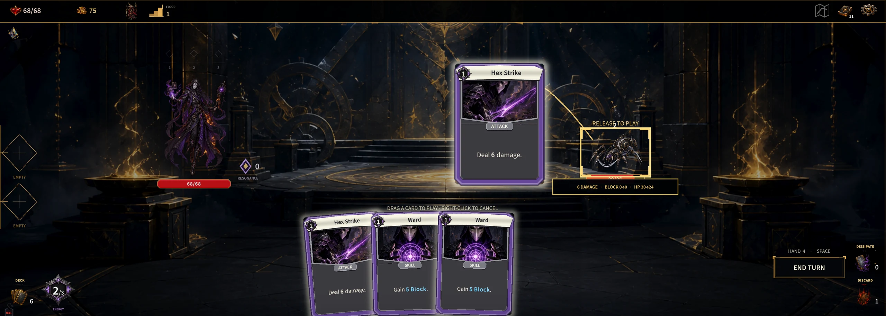
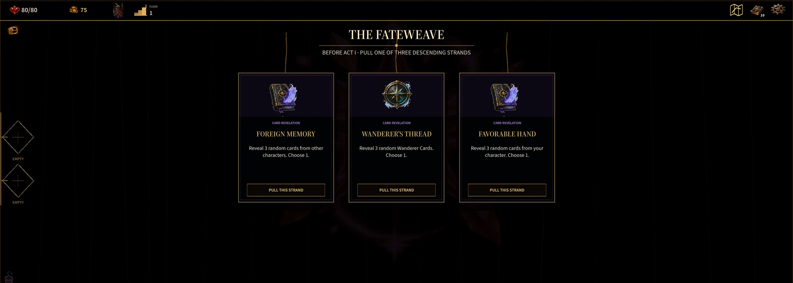
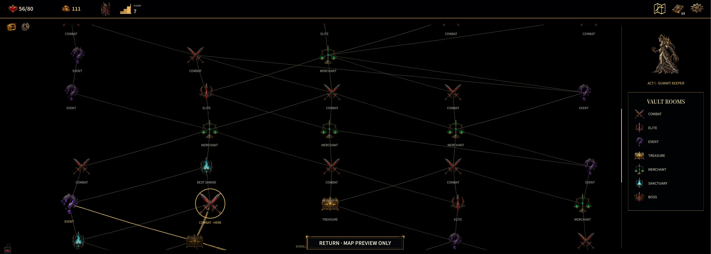

Gilded Fate.
A dark-fantasy deckbuilder built around the choices that shape a run.

- My role
- Direction, systems design,
implementation & UI/UX - Tools
- Unity · C#
Git / GitHub - Development
- AI-assisted iteration
Human direction & integration - Status
- Active development
Balance, QA & polish
Many systems.
One playable run.
Gilded Fate is my current flagship: a roguelike deckbuilder with three playable heroes, card and relic collections, status effects, a branching map, and controller support.
The design challenge is bringing those systems into a coherent experience: choosing a character, navigating a route, making combat decisions, and carrying rewards into the next encounter.
Follow the thread.
Select a stage to explore an actual screen from Gilded Fate.

Choose your hero.
The Vanguard, Hexer, and Reaper have distinct systems. The character archive introduces the hero before the run.
The current build.
Actual development footage. The game remains in progress.
Three heroes.
Distinct identities.
The Vanguard, Hexer, and Reaper each have distinct systems. Character archives give each hero a dedicated place in the interface; combat screens bring their cards and status information into play.
This is where game design and UI meet: the character’s identity has to remain understandable once the run begins.


Make the next
decision readable.
Card combat combines a hand of actions with enemies, health, and status effects. The Hexer combat screen shows how those pieces share a single interface.
My work spans implementation, combat presentation, balancing, and QA. The UI is part of that work: it needs to explain the game’s state while leaving room for the action.

Choices beyond
the battle.
The Fateweave introduces starting choices, while a branching map gives the run its route. Encounters connect to a wider set of systems, including events, rewards, the Sanctuary, Bindings, Sigils, and the shop.
These screens show the scope of the project beyond its combat loop.


Human-directed.
AI-assisted.
I direct the game, choose its systems and interface, implement and integrate the work, and make the final design decisions. AI supports iteration and debugging.
Balance, testing, and presentation are ongoing. The repository and gameplay document the current build; this case study does not claim a finished release or measured playtest outcomes.
Explore the implementation ↗